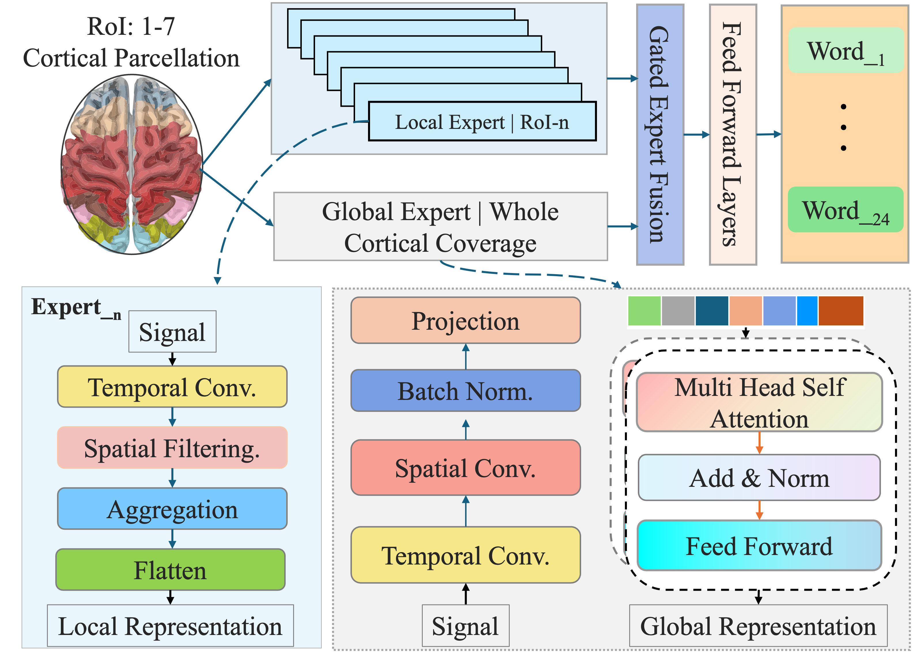

Authors: Ziyi Zhao, Jinzhao Zhou, Xiaowei Jiang, Beining Cao, Wenhao Ma, Yang Shen, Ren Li, Yu-Kai Wang, Chin-Teng Lin
Conference: CVPR 2026 Findings (Accepted)
Code: GitHub Repository
We propose BrainStack, a functionally guided Neuro-MoE framework for robust EEG-based language decoding. By integrating spatially localized EEG branches with a global expert through adaptive expert routing, BrainStack demonstrates state-of-the-art performance on the SS-EEG dataset, achieving 41.87% accuracy across 24 classes. The framework uses cross-regional distillation to align local and global representations.

Figure: BrainStack integrates regional CNN experts and a global CTNet using a token-level meta-fusion mechanism.
SilentSpeech-EEG (SS-EEG) is a large-scale EEG dataset for silent speech decoding:
Due to ethics restrictions, the current public release includes 10 subjects. Access to the remaining anonymized recordings is available upon request, subject to approval.
| Model | Params | Avg. Accuracy (%) |
|---|---|---|
| EEGNet | 8.5K | 28.78 |
| TCNet | 78K | 29.50 |
| EEGConformer | 0.75M | 23.89 |
| BrainStack (Ours) | 1.06M | 41.87 |
Figure 2: Normalized regional importance (feature-level fusion weights) across individual subjects, derived from BrainStack’s gating mechanism.
This heatmap illustrates the normalized importance scores of each brain region across individual subjects, as determined by the feature-level gating weights in the BrainStack ensemble. Both rows (subjects) and columns (brain regions) are hierarchically clustered to highlight patterns of shared regional reliance.
These findings validate the interpretability and neuroscientific grounding of the BrainStack fusion mechanism.
Download PDF (CVPR 2026 Findings)
@article{zhao2026brainstack,
title={BrainStack: Neuro-MoE with Functionally Guided Expert Routing for EEG-Based Language Decoding},
author={Zhao, Ziyi and Zhou, Jinzhao and Jiang, Xiaowei and Cao, Beining and Ma, Wenhao and Shen, Yang and Li, Ren and Wang, Yu-Kai and Lin, Chin-teng},
journal={arXiv preprint arXiv:2601.21148},
year={2026}
url={https://github.com/Jacoo-Zhao/BrainStack}
}This project is licensed under the MIT License.
For questions, please open an issue in the GitHub repository or contact the first author at ziyi.zhao-2@student.uts.edu.au.